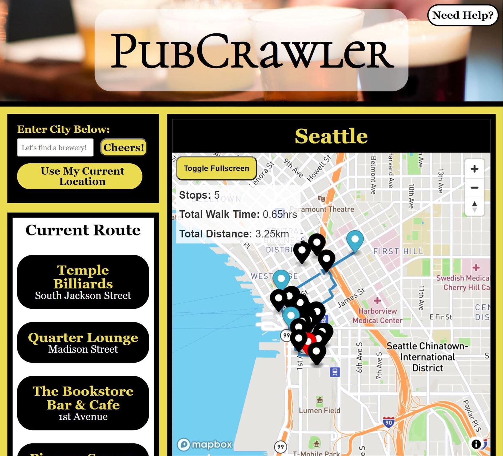
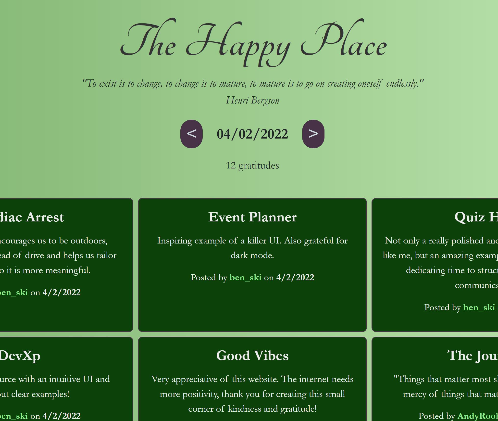

Hi there!
I'm Mike.
Let me introduce myself!
I'm a programmer based in Seattle, WA. I create responsive websites that look and function great across all platforms. I'm currently working as an IT Recruiter, and through this role fell in love with coding and all things tech. Now I'm looking to apply my skills full-time as a Web Developer!
When I'm not busy coding, I like to keep busy with reading, running, yoga, meditation, exploring the amazing sights of the Pacific Northwest with my husband, and playing with our eccentric cat.
Here are some cool projects I've made!
Click on a project for more info.
PubCrawler
The Happy Place
Note Taker
Let's connect!
- Email: MLFitz2@gmail.com
- Phone: 415.423.4516
- My Resume